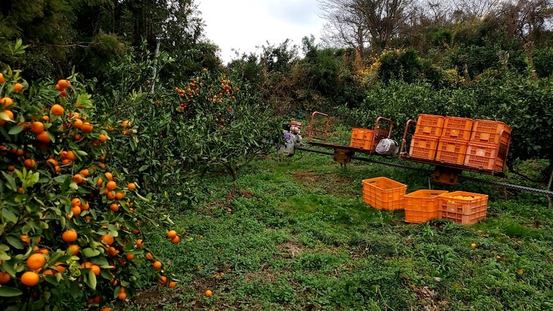
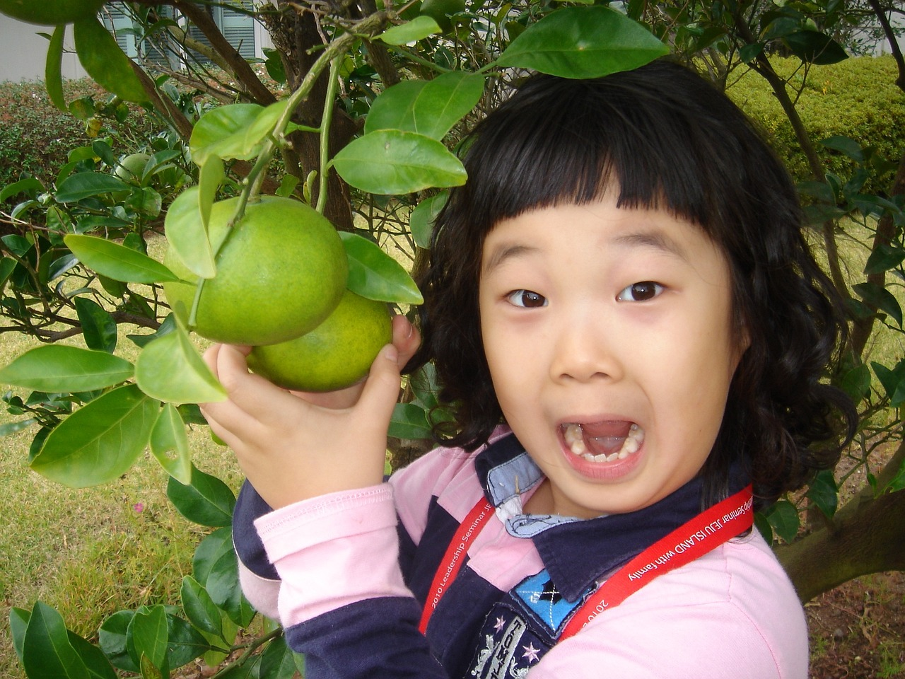

orange farmについて

orange farmは、温暖な気候と適切な土地条件が整っています。これが、みかんの甘さやジューシーさを引き出す要因となっています。また、みかんの栽培に長い歴史を有しており、そのノウハウが品質向上に寄与しています良質なみかんを生産するために、農家たちは栽培技術や収穫時期などを注意深く管理し、良い品種を選別しています。 当園は観光客や地元の人々にとって、美味しいみかんを楽しむだけでなく、地域の自然や農業の魅力を体験する場として訪れる価値があります。
当園と地域のつながり
orange farmでは収穫期などに季節労働者を雇用することがあります。これにより、地域の雇用を促進し、地元経済に貢献します。また、地域の観光やイベントに協力したり、参加したりすることがあります。そして当園でのみかん狩り体験や収穫祭などによって地域への観光客を呼び込み、地域振興に寄与します。当園と地元学生との関わりは、地元の学生を当園での農業体験プログラムに参加してもらい、農業の実践的な知識や技術を身につけていただけるとともに、地元の農業コミュニティとの交流を生むことができます。

全国への流通

orange farmで栽培しているみかんたちは収穫されたのち梱包され、流通センターや卸売市場に送られます。ここで、各地域や小売業者に向けてみかんが仕分けられ、配送の準備を行います。そうして流通センターや卸売市場から、小売業者やスーパーマーケットにみかんが供給され、皆様のお住みの地域でも当園のみかんをお手に取っていただくことができるようになります。また、当園では直売所を設けており、地元の人々や観光客が新鮮なみかんを手に入れることができます。
飲食業界とのかかわり
レストランなど飲食業界でも当園の愛媛県産の柑橘類は使用されています。使用される柑橘類は、その多様な風味や香り、栄養価から様々な料理や飲み物に活用されています。特に、地域の特産品や新しいみかんの品種が利用され、シェフや料理人がアイディアを凝らして創作することで、新しい料理やデザートが生まれることがあります。季節に応じて、特定のみかん品種が使われることがあり、orange farmで栽培している新しい品種やブランドみかんが季節限定のメニューで活用されています。